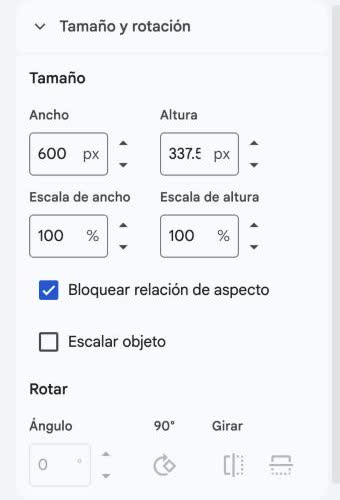
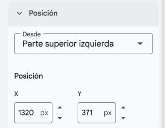

Manual de flujos · Estudio de clases USS · Por web
Elegir cómo crear una clase en video y aplicar siempre las mismas medidas de avatar y logo: tamaño, rotación y posición.
Cada carril es un actor y los pasos van de arriba abajo. Las cajas punteadas son decisiones: «Sí» sigue la flecha; la otra salida está en la tabla de pasos (◆).
| N.° | Actor | Paso | Qué pasa |
|---|---|---|---|
| 1 | Docente | Elige una forma | Usa la tabla «Las 4 formas». |
| 2 | Web del estudio | Prepara las láminas | Forma 1: web y Gemini. Forma 2: tu lámina lista. Forma 3: láminas HTML de la web. Forma 4: panel Imagen de Vids. |
| 3 | Gemini o Google Vids | Crea el avatar o la voz | Formas 1, 2 y 4: avatar de Vids. Forma 3: voz de ElevenLabs en la web. |
| 4 ◆ | Docente | ¿El video se arma en Vids? | Sí en las formas 2 y 4. No en la forma 1, que sigue en el paso 6, ni en la forma 3, que sigue en el paso 7. |
| 5 | Gemini o Google Vids | Aplica las medidas | Avatar y logo en Opciones de formato, con los números de la tabla «Medidas únicas». |
| 6 | Docente | Forma 1: saca el clip del avatar | Por la pestaña Network de Chrome. Súbelo en la web, en Imágenes y avatar. |
| 7 | Programa | Crea el video | Forma 1: Crear video. Forma 3: Crear video final. Formas 2 y 4: Archivo › Descargar › Video MP4. |
| 8 | Docente | Revisa el video | Míralo completo con sonido. Comprueba textos, logo y avatar. |

Tamaño y rotación reales del avatar en Google Vids.

Posición real del avatar, medida desde la parte superior izquierda.
| Forma | Imagen | Voz y avatar | Dónde se arma | Qué gasta | Guía |
|---|---|---|---|---|---|
| 1. Gemini + Hyperframes + avatar de Vids | Gemini, incrustada en las láminas HTML | Clip del avatar de Vids | Web: Imágenes y avatar | 1 avatar por lámina | F15 |
| 2. Lámina + avatar de Vids | Tu lámina lista, como fondo | Avatar de Vids | Google Vids | 1 avatar por lámina | F14 |
| 3. HTML puro + voz de ElevenLabs | Láminas HTML de la web | Voz de ElevenLabs, sin persona | Web: Crear video final | Créditos de ElevenLabs | F01, F06 y F08 |
| 4. Solo Google Vids | Panel Imagen de Vids | Avatar de Vids | Google Vids | 1 imagen y 1 avatar por lámina | F14 |
Con AI Pro tienes 25 avatares y 30 imágenes de Vids al mes. Con cuenta gratis, 6 avatares. En la forma 3 aparece el robot de la web en el recuadro. La forma 1 entrega el video a 1920 × 1080, pero el avatar llega a 1280 × 720.
| Elemento | Ancho | Altura | Ángulo | X | Y | Desde |
|---|---|---|---|---|---|---|
| Avatar | 600 px | 337.5 px | 0° | 1320 px | 371 px | Parte superior izquierda |
| Logo | 300 px | 76.2 px | 0° | 1600 px | 20 px | Parte superior izquierda |
| Lámina de fondo | 1920 px | 1080 px | 0° | 0 px | 0 px | Establecer imagen como fondo |
Son las mismas medidas en todas las láminas, también en la portada. Deja Bloquear relación de aspecto activado, Escala en 100 % y Escalar objeto desactivado. El lienzo mide 1920 × 1080: X + Ancho del avatar = 1920, por eso queda pegado al borde derecho. El logo tiene el mismo ancho en cada escena.
| Paso | Qué haces |
|---|---|
| 1. Abre DevTools | En Google Vids, en Chrome: clic derecho › Inspeccionar › pestaña Network. |
| 2. Filtra | Escribe videoplayback en el filtro. |
| 3. Carga el clip | Selecciona la escena y reproduce el avatar. Aparece una línea por clip. |
| 4. Abre el enlace | Clic derecho en la línea › Open in new tab. |
| 5. Guárdalo | En el reproductor: los tres puntos › Descargar. Ponle el número de su lámina. |
| 6. Súbelo | En la web: Imágenes y avatar › Avatar que habla › Subir clip. |
Datos de una prueba en esta clase: MP4 de 1280 × 720 con voz; duraciones de 10.3, 20 y 17.4 segundos. El enlace caduca en unas horas y no es una función oficial de Google: si deja de funcionar, recarga la página y repite los pasos.
| Lo que ves | Por qué pasa | Qué hacer |
|---|---|---|
| La línea videoplayback no aparece | El clip aún no carga. | Reproduce la escena y recarga la página con Network abierta. |
| El enlace ya no abre | Caducó. | Recarga Google Vids y copia el enlace nuevo. |
| El avatar sale cortado o movido | Las medidas cambiaron. | Vuelve a escribir los números de la tabla Medidas únicas. |